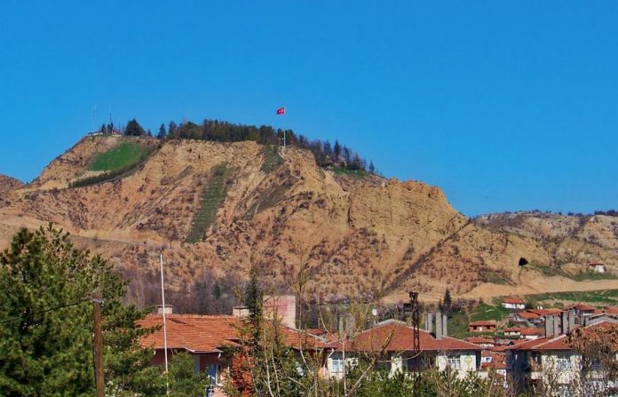
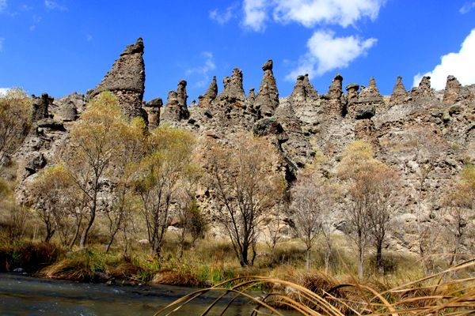
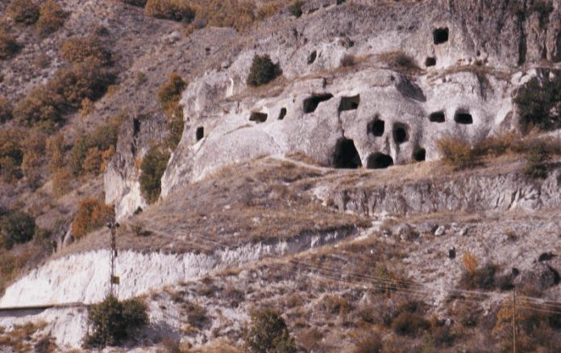

1-Çankırı şehir merkezinin kuzeyinde yer alan Çankırı Kalesi, şehre tepeden bakan konumuyla ve tarihi geçmişiyle şehrin simge noktalarından. Üzerinde kitabesi bulunmadığı için tam olarak ne zaman ve kim tarafından yaptırıldığı bilinmeyen kalenin, Hititliler döneminde yapılmış olabileceği düşünülüyor. Moloz taş ve tuğla malzeme ile inşa edilen kale, Romalılardan, Osmanlı’ya kadar birçok medeniyet tarafından kullanılmış. Her yönetim değiştiğinde yeniden onarım ve eklemelerden geçen kale, geçen son yüz yıla kadar aktif olarak kullanılmış. Ancak ne yazık ki bugün kaleden geriye birkaç sur parçasından başka bir şey kalabilmiş değil. Son yıllarda yapılan kale ve çevresindeki ağaçlandırma ile birlikte ışıklandırılan kale, günün her saatinde mesire alanı olarak da kullanılıyor. İçerisinde Roma döneminden kalan sarnıç ve kaya mezarları dışında, Çankırı’nın fatihi olarak da bilinen, Danişmentliler’den Karatekin Bey ve ailesinin türbesi yer alıyor. 14.Yüzyılda yapıldığı düşünülen türbeyi, siz de şehre geldiğinizde ziyaret edebilirsiniz.
2-Listemize şehrin ilgi çekici yapılarından biri olan Sakaeli Kaya Mezarları ve Peri Bacaları ile devam ediyoruz. Çankırı’nın şehir merkezine 1 saatlik uzaklıkta yer alan Orta ilçesindeki tarihi alan, ilçe merkezine ise 7 km mesafede bulunuyor. İlçenin en eski yerleşim yerlerinden biri olan Sakaeli Köyü’ndeki mezar ve peri bacaları, yüzlerce yıllık tarihiyle ziyaretçilerini ağırlıyor. Eski tarihlerde doğadaki yırtıcı hayvanlardan ve doğal afetlerden korunmak için yüksekte bulunan mağaraların içine yerleşen insanlar, yaşam alanlarını ve mezarlarını da bu mağaralar üzerinde kurmuş. Romalılar ve Bizanslılar döneminde yapıldığı tahmin edilen kaya mezarlar, günümüzde halen gözle görülebiliyor. Hemen ön kısmında ise aynı zamanda Kızılırmaklı da besleyen Devrez Çayı’nın üzerinde peri bacaları yer alıyor. Gelin Kayası mevkisi olarak da bilinen bacaları ve tarihi oda mezarlarını, ziyaret ederek tarihe doyabilir, Devrez Çayın’dan balık tutarak keyifli bir gezi günü de geçirebilirsiniz.
3-Çankırı’da yer alan tarihi yaşam alanlarından birisi de, Çankırı’nın Ilgaz ilçesinde yer alan Salman Höyüğü. Cendere Köyü’nün içinde yer alan tarihi alan aynı zamanda Kastamonu-Çankırı yoluna da oldukça yakın bir noktada bulunuyor. Bölgede bulunan yüksek bir tepenin üzerinde yer alan kaya mezarları, ne yazık ki kaçak defineciler tarafından talan edilerek zarar görmüş bir alan. Bizans ve Romalıların yaşam sürdüğü alan olarak bilinen höyük, daha eski tarihlere de dayandırılıyor. Devrez Çayı’nın yakınlarında yer alan Cendere Salman Höyük’ü ziyaret ettiğinizde kayaların içerisine oyularak inşa edilen mezar ve mağaraları görmeden dönmeyin.
